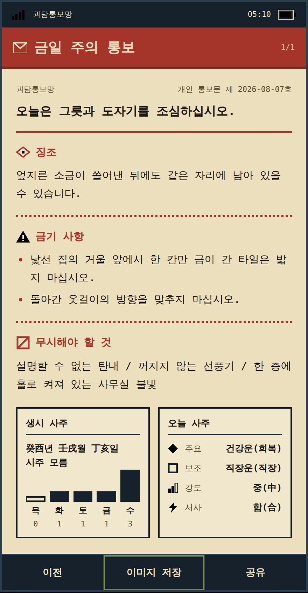
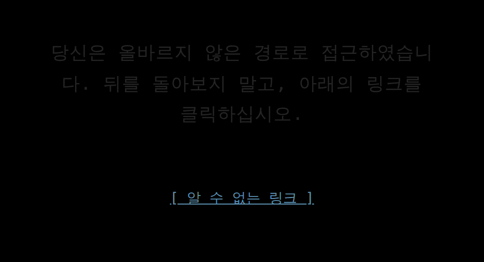

괴담이 다시 유행했습니다.
괴담을 소재로 작은 서비스를 하나 만들어보면 재미있겠다고 생각했습니다.
‘괴담이 요즘 유행인데, 하나 만들어볼까’라는 생각에서 시작했습니다.
Personal Project · Web Service괴담을 한 번 읽고 끝나는 콘텐츠가 아니라, 오늘의 운세처럼 다시 찾아보게 만들 수 있을지 궁금했습니다. 그렇게 생년월일과 오늘 날짜에 따라 다른 괴담이 도착하는 서비스를 만들었습니다.
‘괴담을 조금 더 자주 보게 할 수 없을까’라는 질문에서 출발했습니다.
괴담을 소재로 작은 서비스를 하나 만들어보면 재미있겠다고 생각했습니다.
무작위 괴담만 보여준다면 몇 번 보고 나면 흥미가 끝날 가능성이 높았습니다.
결과가 매일 달라진다는 이유만으로도 반복해서 찾아보게 되는 콘텐츠라는 점에 주목했습니다.
생년월일과 오늘 날짜가 괴담에 영향을 주고, 매일 다른 통보문이 도착하도록 만들기로 했습니다.
사주를 그대로 풀이하면 또 하나의 운세 서비스가 됩니다. 반대로 생년월일을 받으면서 결과가 완전히 무작위라면 개인화라고 부르기 어렵습니다.
그래서 운세는 보여주는 콘텐츠가 아니라, 어떤 괴담을 보여줄지 정하는 기준으로 사용했습니다.

이 화면은 하나의 예시입니다. 실제로는 생년월일과 날짜마다 다른 조합이 나옵니다.
사용자는 매일 운세와 같이 한 장의 괴담을 받습니다. 이 값들은 점수나 순위로 화면에 나오지 않고, 그 계산으로 고른 장소·사물·현상·금기를 하나의 문장으로 조립한 통보문으로만 전달됩니다.
사용자는 생년월일을 입력하고, 그날 자신에게 도착한 통보문 한 장을 받습니다. 운세 풀이를 길게 보여주기보다 괴담 자체가 결과가 되도록 만들었습니다.

괴담 자체는 생성형 AI가 매번 새로 쓰지 않습니다. 대신 콘텐츠 규칙과 검수 기준을 정하고, 이를 구현하고 테스트하는 과정에서 Claude Code, Codex, ChatGPT를 함께 사용했습니다.
무엇이 어색한지, 어떤 결과를 정상으로 볼지 먼저 정했습니다.
정한 기준을 바탕으로 코드와 테스트를 AI와 함께 만들었습니다.
다른 AI에게 코드와 콘텐츠를 다시 보여주고 놓친 문제를 찾았습니다.
수치와 실제 출력 문장을 함께 보고 무엇을 남길지 결정했습니다.
교차 검토와 최종 판단이 실제로 어떻게 작동했는지, 세 가지 사례입니다.
아파트 엘리베이터 로비의 거울 앞에 쌓여 있는 마른 흙을 쓸어 담지 마십시오.
문법만 맞으면 충분하다고 생각했지만, 장소에 존재하기 어려운 사물이 섞이면 괴담보다 조합 오류처럼 보였습니다. 이후 장소의 기능과 사물의 존재 가능성까지 조건으로 묶었습니다.
생성 결과를 모아보니 특정 기운과 소재가 반복해서 선택되는 경향이 있었습니다. 계산식 안에서 매일 변하지 않는 값이 지나치게 큰 영향을 주고 있다는 걸 확인했고, 날짜에 따라 실제로 달라지는 신호가 더 잘 반영되도록 비중을 다시 조정했습니다.
수정 전에는 한 오행이 68.4%까지 몰렸지만, 조정 후 24.3% 수준으로 내려갔습니다.
조건에 가장 잘 맞는 소재 하나만 계속 선택하면 결과는 정확해 보이지만 금방 익숙해집니다. 그래서 적합한 후보 몇 개를 남기고, 그 안에서 같은 사람·같은 날짜에는 같은 결과가 나오도록 선택 방식을 바꿨습니다.
1년 반복 테스트에서 같은 문장이 다시 나타나는 시점이 12일에서 49일로 늦어졌습니다.
수치는 결론이 아니라 확인 수단으로 썼습니다. 대량 생성 결과와 실제 문장을 함께 보면서 ‘이상해 보이는 이유’를 먼저 찾는 방식으로 작업했습니다.
AI가 결과를 대신 정하게 하기보다, 제가 기준을 만들고 여러 AI를 구현과 검토에 나누어 사용하는 방식에 가까웠습니다.
운세를 풀이하지 않고, 오늘 한 장의 괴담으로 전달합니다.